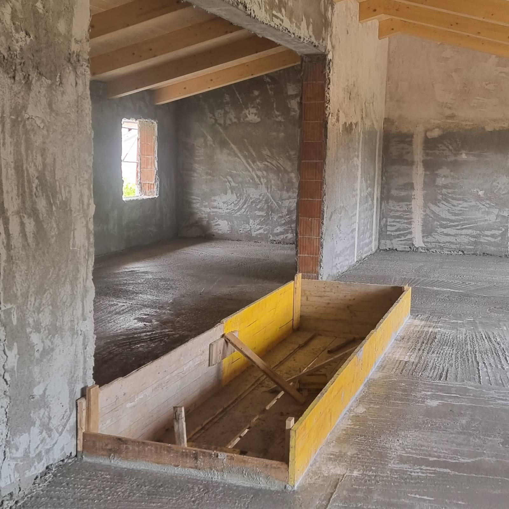
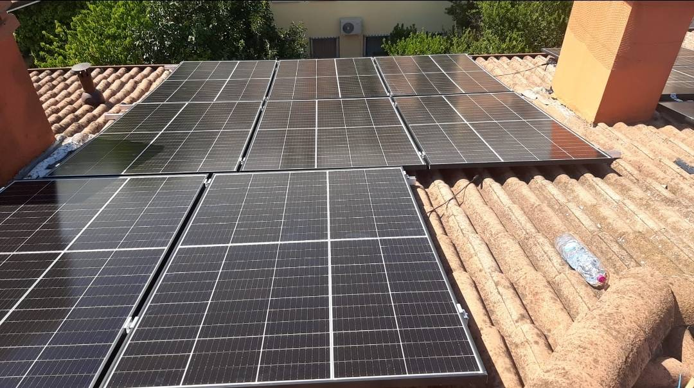
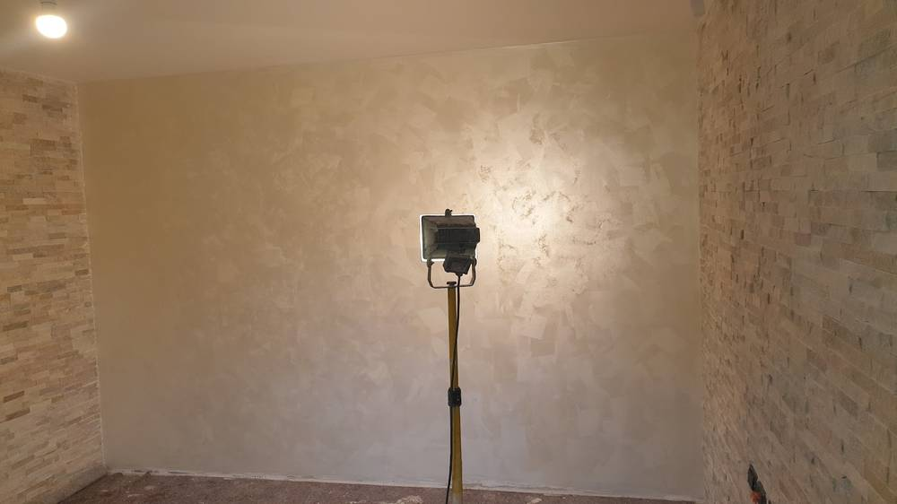

Ristrutturazioni edili · Pordenone
Lavori di casa fermi da tempo? Li finiamo noi.
Atip e la sua squadra: appartamenti, tetti, travi, facciate e finiture, a Pordenone.
4,9 su Google · 17 recensioni

- 4,9su Google, 17 recensioni
- Atipe la sua squadra
- Dalle 7:30in ufficio, Via Udine 122
- Pordenonecase e appartamenti
01 · Lavori
Dal tetto al pavimento.
Coppi rifatti, perdite trovate e chiuse, anche sul tetto del garage.
Travi in legno nuove o sistemate, con una soluzione solida.
Ponteggio, intonaci e pittura esterna.
Rasature, tinteggiatura, finiture decorative, anche i mobili.
Grandi lastre a parete, posate a livello con i distanziatori.
Anche all'ottavo piano: tutto il lavoro, una squadra.
02 · Una recensione
«Mi sono rivolta ad Atip dopo anni che i lavori di casa mia non andavano avanti. In due settimane è riuscito, con la sua squadra, a portare a termine tutti i lavori.»
Daniela Harutunyan, recensione Google
03 · Dai cantieri
Più di mille foto su Google. Eccone alcune.


04 · Chi siamo
Un impresario che consiglia, oltre a costruire.
I clienti lo chiamano per nome: Atip. Guida la squadra in cantiere, fa il sopralluogo e il preventivo, e quando serve aiuta a scegliere colori e materiali.
- Sopralluogo e preventivo«velocissimi», scrive un cliente
- Colori e materialiconsigliati da Atip
- Problemi difficiliuna trave critica, un'infiltrazione dal tetto
05 · Recensioni Google
4,9 su 17 recensioni.
«La sistemazione della trave, che presentava criticità non banali, è stata affrontata con una soluzione solida e professionale.»
Dario Rossetti
«Ho ristrutturato una parte della mia abitazione, e risolto un problema di infiltrazione dal tetto del garage.»
Angela Diomede
«Sopralluogo preventivo velocissimi; esecuzione lavori in tempi molto brevi.»
bab ezzouar
«La sua squadra si è dimostrata competente e veloce nonostante l'ottavo piano.»
Alessio Corazza
06 · Contatti
Chiamate Atip.
Per un sopralluogo, un preventivo o solo un consiglio. Si risponde dalle 7:30.
- Telefono392 029 5892
- WhatsAppScrivete un messaggio
- Emailatip_1978@hotmail.it
- SedeVia Udine, 122
33170 Pordenone PN